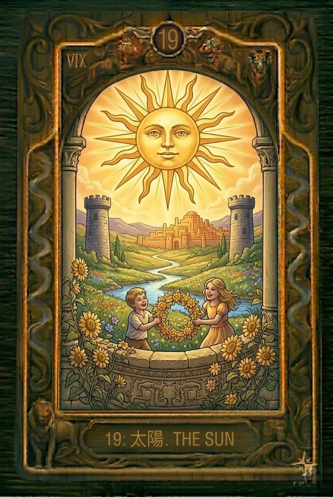
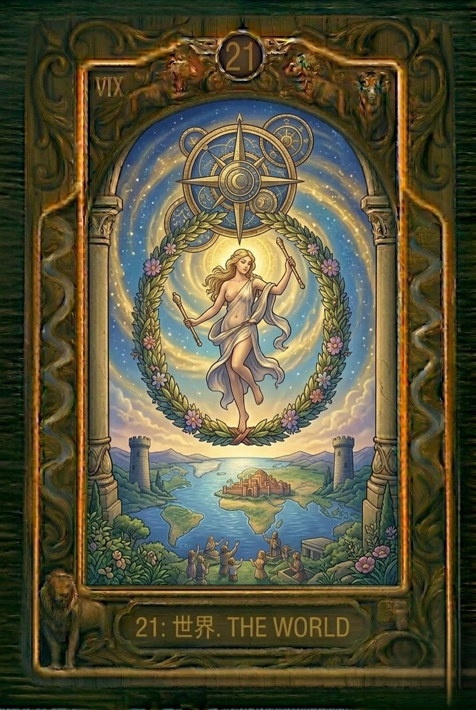
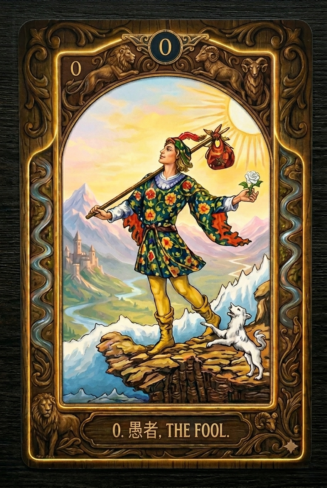
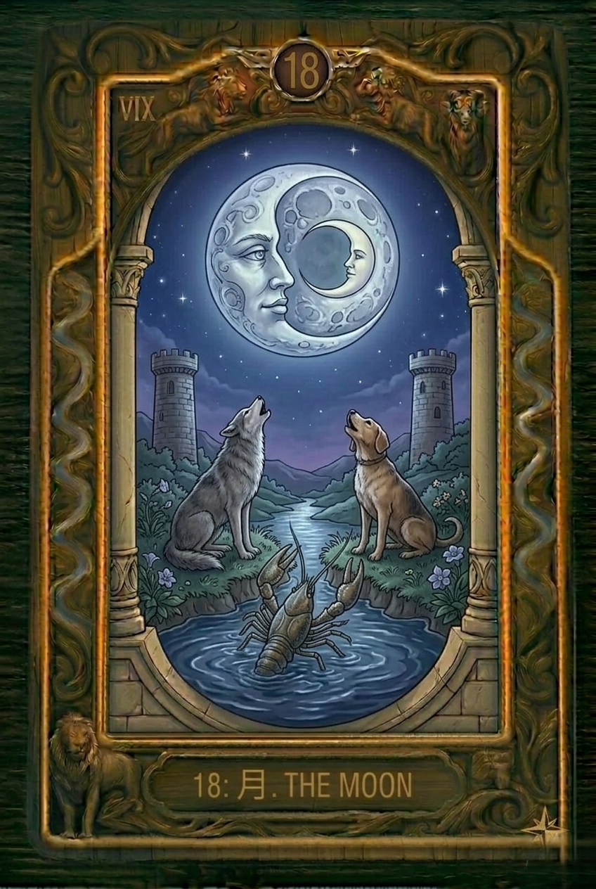

★
★
完全無料鑑定
No charge · Free Reading





ライフチェンジリーディング
Life Change Reading · 無料鑑定
◆
あなたの「名前」と「生年月日」には、
あなた自身も気づいていない深い意味が宿っています。
あなた自身も気づいていない深い意味が宿っています。
数秘術は、古来より名前・生年月日に秘められた数字から、その人の本質・使命・才能・課題を読み解く深い学問です。
このリーディングでは、あなたの名前のエネルギーナンバーと生年月日から導く本質ナンバーを組み合わせることで、あなたという存在を多角的に、そして深く読み解きます。
さらに、タロットを使い過去・現在の流れを可視化。心と身体のつながりを読み解きながら、エネルギー調整で心と身体を整えます。
このリーディングでは、あなたの名前のエネルギーナンバーと生年月日から導く本質ナンバーを組み合わせることで、あなたという存在を多角的に、そして深く読み解きます。
さらに、タロットを使い過去・現在の流れを可視化。心と身体のつながりを読み解きながら、エネルギー調整で心と身体を整えます。
◆ あなたの情報を入力してください ◆
名前と生年月日から、あなただけの特別なリーディングをお届けします
例：タナカ タロウ ／ 姓名をカタカナで入力してください
4桁で入力
01〜12
01〜31
★ 無料鑑定 ★
✦ 名前のエネルギー ✦
—
—
—
—
✦ 生年月日の本質 ✦
—
—
—
—
◆ 名前と生年月日が示すもの ◆
◆ あなたの本質・特性 ◆
◆ 過去３年・そして今 ◆
◆ 今のあなたへ ◆
◆ あなたの未来を、さらに深く読み解きます ◆
ここまでのリーディング、いかがでしたか？
名前のエネルギー、生年月日が示す本質、そして過去から今に至る流れ——自分でも気づいていなかった部分が、少し見えてきたのではないでしょうか。
あなたはすでに、自分の本質を知り始めています。
実は、今日お伝えできたのはまだ入口の部分です。
あなたの未来にどんな流れが訪れるのか。これからのターニングポイントはいつなのか。心と身体に今本当に必要なケアは何なのか——これらをさらに深く、あなただけのリーディングとしてお届けしたいと思っています。
名前のエネルギー、生年月日が示す本質、そして過去から今に至る流れ——自分でも気づいていなかった部分が、少し見えてきたのではないでしょうか。
あなたはすでに、自分の本質を知り始めています。
実は、今日お伝えできたのはまだ入口の部分です。
あなたの未来にどんな流れが訪れるのか。これからのターニングポイントはいつなのか。心と身体に今本当に必要なケアは何なのか——これらをさらに深く、あなただけのリーディングとしてお届けしたいと思っています。
🎁 LINE登録で特典プレゼント
-
✦ 未来３年間の無料リーディング
今のあなたの流れは、これからどこへ向かうのでしょうか。
1年後・2年後・3年後——それぞれの年に訪れるカードのエネルギーを読み解き、あなただけの未来の流れをお届けします。
来るべき変化を知ることで、恐れるのではなく、準備し、迎え、活かすことができます。
登録後は 「鑑定希望」 と一言送っていただくだけで大丈夫です。
こちらからご連絡します。
こちらからご連絡します。
📱 LINE・Zoomによるオンライン対応｜時間や場所を選ばずご利用いただけます